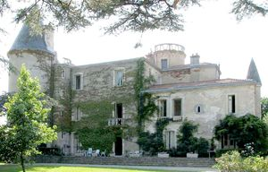
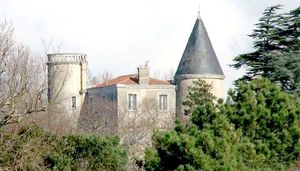
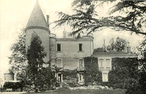
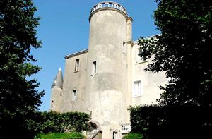
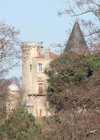

Recensement Jean-Claude Truffet
| Département | 40 — Landes |
| Canton | St-Martin de Seignanx |
| Commune | Ondres |
| Type d'édifice | Château |
| Période d'origine | XIV |





LARROQUE, en 1442 le roi Charles VII en fit don au connétable de Richemont. Le sire de Losse y fut enfermé pendant cinq ans pour le meurtre du sieur de Juliac . En 1512 il devient la propriété de Françoise de Cauna, dame de Pouillon. En 1571, fut acquis par la famille d'Albret. En 1584 Henri IV le vendit à Jean de Pouillon. En 1587, Charles de Saint-Martin, sénéchal des Lannes, sieur de Biscarrosse, qui habitait en son château de la Rocque d'Ondres. En 1589, Loys, seigneur de Saint-Martin, résidait au château de la Roque. Il épousa Françoise de Noailles, nièce de F. de Noailles, évêque d'Acqs (DAX). Le dernier des Pouillon y mourut en 1715. A la veille de la Révolution le château appartient à un comte Pujol de Juliac. En germinal An II le château est saisi et vendu comme bien d'émigré à monsieur Dominique Grandferry, libraire à Bayonne. Monsieur le comte du Puys d'Alissac acquiert le château de la Roque avant 1826. Il fut acquis plus tard par le comte du Puys d'Alissac, lieutenant du roi Charles X à Bayonne. A partir de cette date les actes de ventes successifs permettent d'identifier les différents propriétaires : En 1836 Jean-Cécile Lafargue, en 1855 Auguste Serres. En 1863 Benoît Lamarthonie et Françoise Sara son épouse, en 1870 Françoise Sara et Natalio Lorenzo Diaz, en 1877 M. Considine de 1883 à 1890 Julia Tahl de Lancey, en quatre acquisitions successives : Richard Feuillet, en 1927 la générale Jacqueline Denain, en 1942 Raymond Gaillard en 1958 la société civile particulière La Roque Saint-Germain, en 1973 Jean Edouard Ducamp, en 1980 Antoine Branger.
Le château de La-Roque fut construit en 1130, pour le comte de Cominges. Au XIIe siècle, les rois d'Angleterre, qui étaient aussi ducs d'Aquitaine, ont sjourné au château. Afin d'assurer leur sécurité, il fallut bâtir des fortifications importantes. De 1199 à 1216, Jean Sans-Terre, roi d'Angleterre fit abattre des fortifactions importantes, ne laissant au logis que ses 2 tours rondes. C'est la plus ancienne constuction de la commune, le château deLarroque sera rénové plusieurs fois. La Tour de Guet sera restaurée en 1828. Au XXe siècle, plusieurs transformations, dont l'une des dépendances en un hopital militaire, au cours de la grande guerre. C'est la plus ancienne constuction de la commune, situé au sud-ouest du village, sur un promontoire à 46 mètres au dessus du niveau de la mer, le château de Larroque possédait un impressionnant système de défense le transformant en une véritable forteresse. Le corps du batiment est composé de 3 étages, flanqué d'une guérite en pierre pour assurer la surveillance et de 2 imposantes tours rondes, hautes de 17 mètres. La tour orientale est appelée la tour de guet. La tour coté ouest est nommée la tour de Caput-Brut.
Comte du Puys d'Alissac
"
Château de Larroque 43° 33' 34 nord, 1° 27' 41 ouest à Ondres